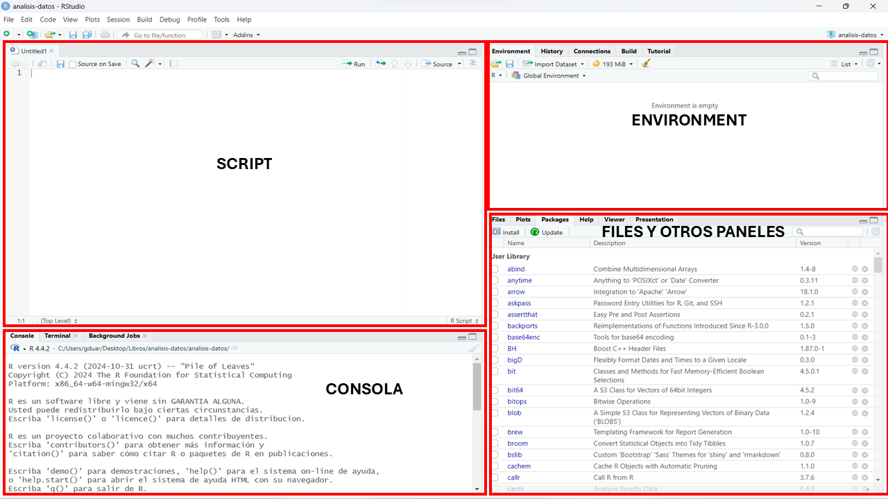
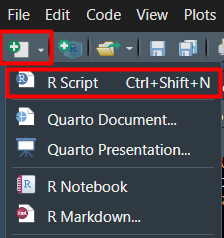
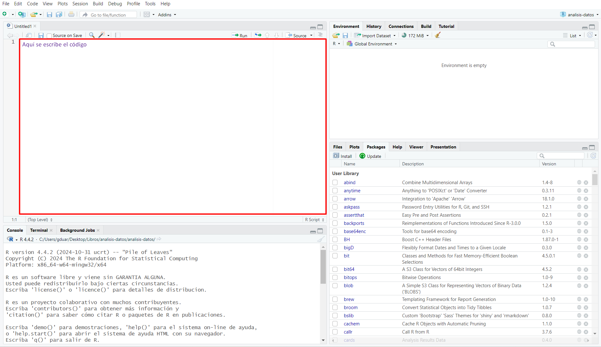
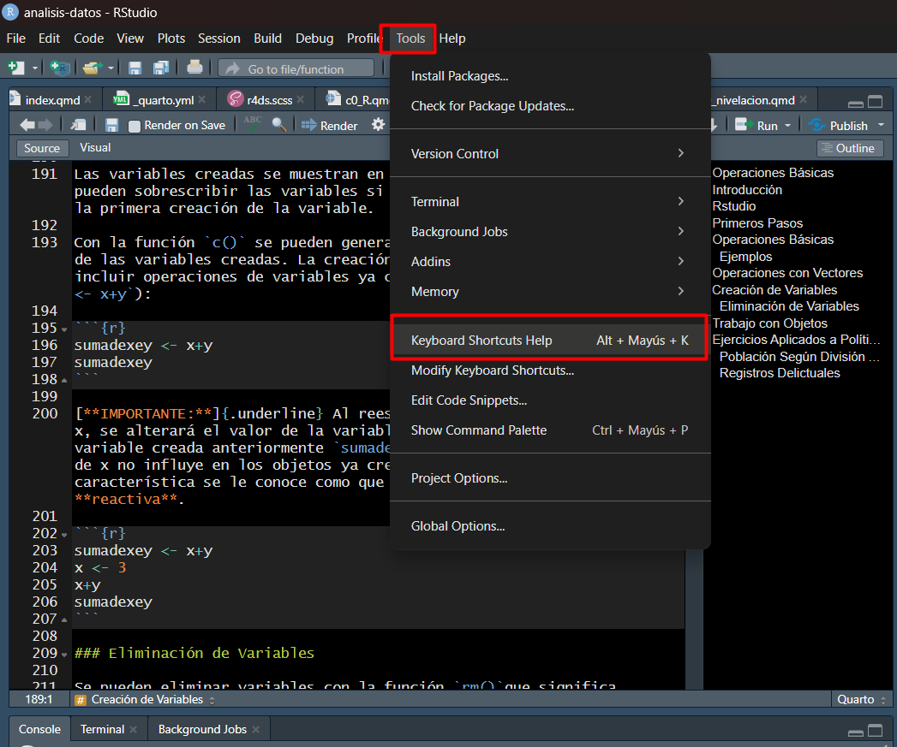

Primeros Pasos con R
Introducción
R debe entenderse como un lenguaje y ambiente de programación. A lo largo de este apartado, enfocaremos el uso del software como un proceso de exploración de datos:

Rstudio
Una vez descargado R y Rstudio, para empezar a trabajar basta con abrir la aplicación  . La ventaja de esta plataforma es que entrega una interfaz más amigable para el trabajo, la cual se divide en 4 partes:
. La ventaja de esta plataforma es que entrega una interfaz más amigable para el trabajo, la cual se divide en 4 partes:
Scripts o Editor de Código (Parte Superior Izquierda): Aquà es donde escribes y guardas tu código. Piensa en esto como un cuaderno digital donde puedes escribir varias lÃneas de código antes de ejecutarlas. A diferencia de la consola, el código aquà no se ejecuta de inmediato. Para hacerlo, primero debes seleccionarlo y presionar Ctrl + Enter (Windows/Linux) o Cmd + Enter (Mac) para ejecutarlo lÃnea por lÃnea o en bloques.
Consola (Parte Inferior Izquierda): Aquà puedes escribir código y ejecutarlo directamente, obteniendo resultados de inmediato. Sin embargo, lo que escribas en la consola no se guarda automáticamente, por lo que es mejor usar scripts para guardar tu trabajo y reutilizarlo en el futuro. Al ejecutar un script o una parte de él, código se correra directamente en la consola.
Environment (Parte Superior Derecha): Muestra los objetos que has creado en tu sesión, como variables, data frames y funciones. Piénsalo como una lista de los elementos con los que estás trabajando.
Files y Otros Paneles (Parte Inferior Derecha): una caja de herramientas con varias funciones útiles: les: Permite navegar por los distintos archivos del computador
Files: Permite navegar por entre carpetas y archivos de tu computador o la nube
Plots: Muestra los gráficos que generas con R.
Packages: Aquà podemos instalar y cargar las distintas librerÃas con las que trabajaremos.
Help: Pestaña de ayuda para buscar sintaxis y argumentos de las funciones que usemos.
Viewer: Se usa para visualizar reportes en HTML, tablas y mapas interactivos y otros elementos gráficos.

Inicio de Rstudio
- Abrir
- Abrir un script usando
CTRL + SHIFT + No bien usando el menú de Rstudio . Esto debiese abrir una ventana como la que se ve a continuación:

Operaciones Básicas
El signo # permite escribir texto en el script, el cual no será considerado cómo código al momento de ejecutar un comando:
R se puede ocupar como calculadora para las principales operaciones matemáticas y operadores lógicos. Por ejemplo, al escribir en la consola 2+2 y apretar ENTER (o CTRL + ENTER si escribo el código en el script) nos devolverá el resultado de 4:
Es importante considerar la siguiente información respecto de las operaciones al escribir código en R:
- Si una lÃnea termina con una operación, pasará a la siguiente lÃnea para continuar.
- Los espacios dentro de una misma lÃnea no se consideran relevantes.
- El operador lógico de “igual†se escribe:
==.
Las operaciones matemáticas más utilizadas se señalan en la siguiente tabla:
| Operador | Sintaxis |
|---|---|
| Suma | + |
| Resta | - |
| División | / |
| Multiplicación | * |
| ^ | Exponente |
| %% | Módulo (Resto de una división) |
| %/% | División Entera |
Apliquemos el operado suma y resta:
Vemos que los espacios entre operadores y números no afectan la ejecución de código:
Es importante notar que pa escribir decimales se ocupa el “.†y no la “,â€
El código y las operaciones se pueden traspasar entre lÃneas de código. Esto será útil cuando veamos las recomendaciones sobre cómo escribir código para que este sea más entendible:
Mientras que los operadores lógicos más usados, estan en la siguiente tabla:
| Operador | Sintaxis |
|---|---|
| Mayor | > |
| Menor | < |
| Igual | == |
| Distinto | != |
| Mayor o igual | >= |
| Menor o igual | <= |
| En (Contiene a) | %in% |
| No en (No contiene a) | !(%in%) |
Los operadores lógicos nos serán de mucha ayuda cuando trabajemos con la manipulación de datos, lo cual se verá en el apartado de Herramientas para la Ciencia de Datos. En particular, el operador %in% nos permitirá eficientar nuestro código cuando queramos hacer filtros o selecciones múltiples.
Ejemplos
Operaciones con Vectores
En general, se suele trabajar con estructuras de datos. La estructura más básica es el vector. Con la función c() (que se conoce como combinar) se pueden crear vectores.
Se pueden realizar operaciones matemáticas con vectores al igual que como se realizan con números.
R entrega mensajes de error y advertencia. Ejemplo de esto último ocurre cuando se realizan operaciones con vectores de distintas dimensiones, en donde el vector más corto se vuelve a operacionalizar con las componentes restantes del vector más largo en orden lógico (izquierda a derecha).
Warning in c(1, 2, 3, 4) + c(2, 3, 4): longitud de objeto mayor no es múltiplo
de la longitud de uno menor[1] 3 5 7 6En efecto, vemos que en el segundo caso lo que hace R es el siguiente proceso: \[Z = X + Y =\{x_1 +y_1,x_2+ y_2,x_3+y_3,x_4+y_1\}\] donde \(X\) es un vector tal que \(X=\{x_1=1,x_2=2,x_3=3,x_4=4\}\) e \(Y\) es otro vector tal que \(Y=\{y_1=2,y_2=3,y_3=4\}\)
También se puede trabajar con datos de carácter. La forma de indicar que un dato es string (carácter) es escribiendo el texto entrecomillas: ""
La función class() permite conocer qué tipo de dato es el objeto indicado, es decir, conocer su clase
Con la función c() se pueden crear vectores de datos de carácter, al igual que cómo se realiza con números. También se pueden crear vectores con los valores lógicos: TRUE, FALSE y NA.
Es importante señalar que los vectores solo admiten un tipo de dato, es decir, no se puede combinar en un solo vector datos numéricos y lógicos, por ejemplo. Si se combinan, R hará la transformación correspondiente a un solo tipo de dato.
Creación de Variables
La creación de variables u objetos se operacionaliza con el siguiente sÃmbolo: <- o bien ALT + -
Por ejemplo, asignar a x el valor 1 se escribe asÃ: x <- 1. La forma rápida de escribir el sÃmbolo de creación es a través de: ALT + -:
Para ver más atajos, se puede buscar en herramientas -> Keyboard shortcuts quick reference.

Las variables creadas se muestran en Global environment. También se pueden sobrescribir las variables si se ejecuta un código posterior a la primera creación de la variable.
Con la función c() se pueden generar vectores combinados en función de las variables creadas. La creación de variables también puede incluir operaciones de variables ya creadas (por ejemplo, sumadexey <- x+y):
Al reescribir una variable, por ejemplo, x, se alterará el valor de la variable x, mas no el valor de la variable creada anteriormente sumadexey. Es decir, cambiar el valor de x no influye en los objetos ya creados. Técnicamente, esta caracterÃstica se le conoce como que la asignación de valores no es reactiva.
Lo anterior implica que, a medida que vamos realizando cambios en un mismo objeto, si queremos corregir algo en un paso intermedio, debemos asegurarnos de correr todo el código desde el inicio (o al menos en las partes relevantes) con el fin de minimizar los riesgos de cometer un error en nuestros cálculos.
Eliminación de Variables
Se pueden eliminar variables con la función rm()que significa remove
Si se quiere eliminar todo lo que está en Global environment se puede ocupar la siguiente función: rm(list=ls())
Trabajo con Objetos
En la siguiente sección se estudia cómo aprovechar la facilidad de trabajar con objetos en R.
Para crear un vector ocupamos el comando de creación:
Para devolver el valor en la posición 5 del vector, realizamos la siguiente operación:
Es clave entender la funcionalidad del corchete [] aplicándolo a una variable x cualquiera:
| Sintaxis | Valor que Entrega |
|---|---|
| [n positivo] | Valor de la componente del vector en la posición n |
| [n negativo] | Valor de todas las componentes del vector excepto la posición n |
| [n:m] | Valor de las componentes del vector desde la posición n hasta la m inclusive |
| == n | Operador lógico para cada componente del vector que indica si se cumple la condición (=n) |
| [x==n] | Extrae todos los valores del vector que cumplen la condición (valores igual a n) |
| [x!=n] | Extrae todos los valores del vector que cumplen la condición (valores distintos a n) |
Veamos algunos ejemplos aplicados al vector1 de números pares entre 0 y 20:
- Extraer todos los números del vector1, a excepción del que está en la posición 1:
- Extraer los números entre la posición 2 y 4 (incluyéndolos) del vector1
- Extraer los números en las posiciones 1, 3 y 5 de vector1
- Evaluar para cada elemento del vector si se cumple la condición de ser igual a 12
[1] FALSE FALSE FALSE FALSE FALSE FALSE TRUE TRUE FALSE FALSE FALSE FALSE- Extraer todos los números de vector1 que cumplan la condición de ser igual a 12
- Extraer todos los números de vector1 distintos a 12
Ejercicios Aplicados a PolÃtica Pública
En esta sección trabajaremos con datos de Chile que nos permitan realizar algunas de las operaciones básicas revisadas. Estos datos son sobre:
- Población comunal
- Datos de empleo
- Datos delictuales
Para responder preguntas que incluyan decimales, es necesario usar el . como separador en lugar de la , ya que R sigue la convención anglosajona de puntuación.
Población Según División Administrativa de Chile
La división territorial de Chile contempla las siguientes unidades geográficas:
- El paÃs completo se divide en 16 regiones.
- Cada región se subdivide a la vez en provincias, las cuales suman 56 a nivel nacional.
- De manera análoga, cada provincia contempla un número definido de comunas, las cuales suman 346 en total.
Considere el caso de la XV Región de Arica y Parinacota, la cual está compuesta por las provincias de Arica y Parinacota. La provincia de Arica, contiene a las comunas de Arica y Camarones, mientras que la provincia de Parinacota, a las comunas de General Lagos y Putre. Según proyecciones del censo 2017, la población en el año 2025 de cada comuna es la siguiente:
| Comuna | Población Año 2025 |
|---|---|
| Arica | 259.064 |
| Camarones | 1.248 |
| General Lagos | 797 |
| Putre | 2.578 |
Utilizando los datos de población entregada, responda las siguientes preguntas:
¿Cuánta es la población de la Provincia de Arica?
¿Cuánta es la población de la Provincia de Parinacota?
¿Cuánta es la población de la Región de Arica y Parinacota?
¿Qué porcentaje representa la población de la comuna de Arica respecto a la población regional? (aproxime a dos decimales)
Registros Delictuales
En Chile, existen diversas fuentes que reportan la cantidad de delitos ocurridos. Una de las más importantes, es la que sitematiza la SubsecreatarÃa de Prevención del Delito a partir de los casos policiales.
Este último indicador, es una de las variables principales para analizar la ocurrencia de hechos delictivos. Considera las denuncias de delitos que realiza la comunidad en las unidades policiales, más las detenciones que realizan las policÃas ante la ocurrencia de delitos flagrantes. Internacionalmente, este indicador es conocido como “delitos conocidos por la policÃa†(crimes known to police).
Generalmente, al analizar la evolución del fenómeno en el tiempo, se suelen usar dos formas de medición:
Frecuencia Simple: Presenta la cantidad de ilÃcitos registrados en una unidad territorial determinada.
Tasa Cada 100.000 Habitantes: Es un indicador que relaciona el total de ilÃcitos –registrados por las policÃas a través de una denuncia o una detención flagrante– de un territorio con su población. Su importancia metodológica es que permite comparar distintos niveles territoriales (comuna, región y paÃs), en distintos perÃodos de tiempo (meses, trimestres y años). Se calcula dividiendo el total de delitos registrados por las policÃas en un periodo de tiempo (meses, trimestres o años) por la población de referencia para ese mismo periodo, el resultado es multiplicado por 100 mil. De esta forma, la tasa delictual cada 100.000 habitantes queda definida como \[Tasa_{itj} = \frac{Frecuencia_{it}}{Población_{jt}}\times 100.000\]
donde \(i\) representa el delito analizado y \(j\) el territorio analizado y \(t\) el periodo de tiempo analizado.
- Variación Porcentual: Indica si la variable en estudio aumentó o disminuyó. Si la variación resulta positiva significa que la variable aumentó en valor, si la variación resulta negativa significa que la variable disminuyó en valor. Matemáticamente, un variación porcentual se calcula como: \[\Delta\% = \frac{valor_{t1} - valor_{t0}}{valor_{t0}}\times 100 = [\frac{valor_{t1}}{valor_{t0}}-1]\times 100\]
donde \(t0\) corresponde al periodo inicial y \(t1\) al periodo final (por ejemplo, año de inicio de la comparación o \(t0\) y año de término de la comparación o \(t1\)).
Considerando lo anterior, responda las siguientes preguntas aproximando el valor entregado a un solo decimal.
Según datos del observatorio de homicidios, en el año 2023 hubo 1.248 vÃctimas consumadas de homicidios. Si la población nacional proyectada para el año 2023 era de 19.960.889 habitantes ¿Cuál fue la tasa de vÃctimas de homicidios consumados cada 100.000 habitantes en el año 2023?
En el año 2022 se registraron 1.330 vÃctimas de homicidios consumados y hubo una proyección de población de 19.828.563 ¿Cuánto fue la variación porcentual de la cantidad de vÃctimas consumadas de homicidios entre 2022 y 2023?
Asumamos que la población en Chile permanece constante entre el año 2022 y el año 2023. En ese contexto, un colega suyo le dice que es mejor calcular la variación porcentual en términos de tasa que en términos de frecuencia ¿Qué le responderÃa usted?
En el año 2021, en El Salvador se registraron 1.085 vÃctimas de homicidios intencionales, mientras que en el año siguiente en Chile se registraron 1.330 vÃctimas de homicidio. A partir de esto, un colega le señala que Chile está experimentando un nivel de violencia más alto de lo que era El Salvador en el año 2021 y en periodos anteriores ¿Que le responderÃa usted a su colega?